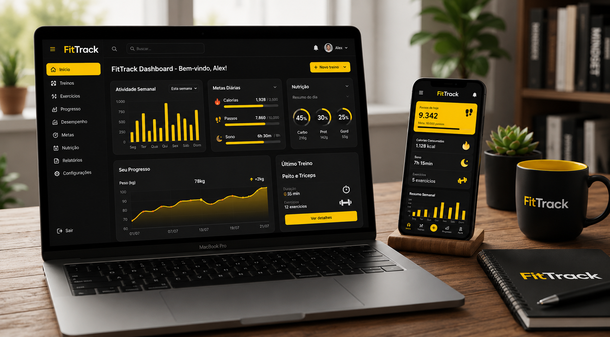
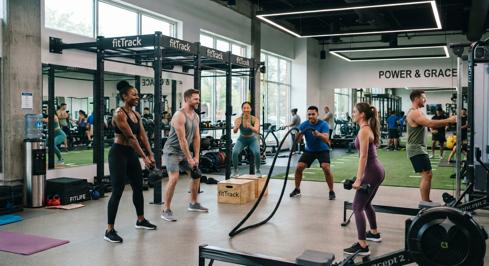

Transforme seus treinos em resultados
Postado em 21 de julho de 2026
Organize seus treinos, acompanhe sua evolução e mantenha a disciplina todos os dias com uma plataforma criada para quem quer evoluir de verdade.


Organize seus treinos, acompanhe sua evolução e mantenha a disciplina todos os dias com uma plataforma criada para quem quer evoluir de verdade.
O FitTrack foi desenvolvido para simplificar sua rotina de treinos. Em um único lugar, você organiza exercícios, acompanha seu desempenho e visualiza sua evolução ao longo do tempo.
Mais do que registrar informações, a plataforma incentiva a criação de hábitos saudáveis por meio de metas, acompanhamento contínuo e uma experiência prática e intuitiva.




Não espere a motivação aparecer. Organize seus treinos, acompanhe seus resultados e transforme a disciplina em hábito.
Começar Agora